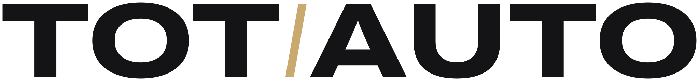
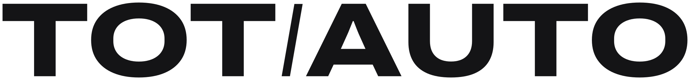

D
Expandida · Archivo 800, anchura 125
Grande · grafito

Grande · blanco

Mediano y pequeño


Símbolo y favicon

símbolo48
32
16
Tot Auto · Showroom
totauto.net
Rótulo de fachada · letras corpóreas

Cabecera de la web
Pocos coches. Todos elegidos.
Deportivos y alta gama seleccionados uno a uno.
VER EL STOCKA favor / en contra
- La misma voz que los titulares de la web: una sola familia en todo.
- Robusta a cualquier tamaño y en corpóreas: trazos gruesos y uniformes.
- La barra inclinada da el gesto de velocidad sin dibujar nada "de coche".
- Es la más larga: en la cabecera móvil ocupa casi todo el ancho.
- Sin símbolo propio: el favicon es una T con barra.